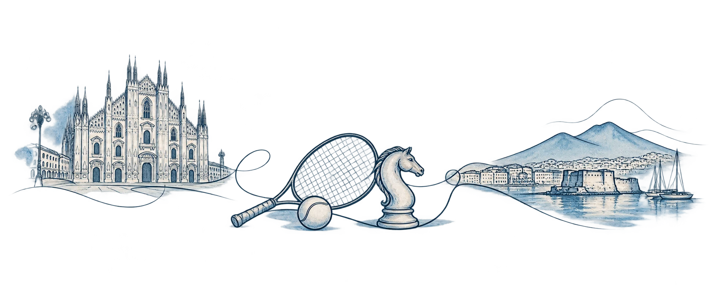
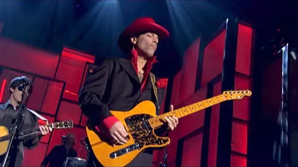
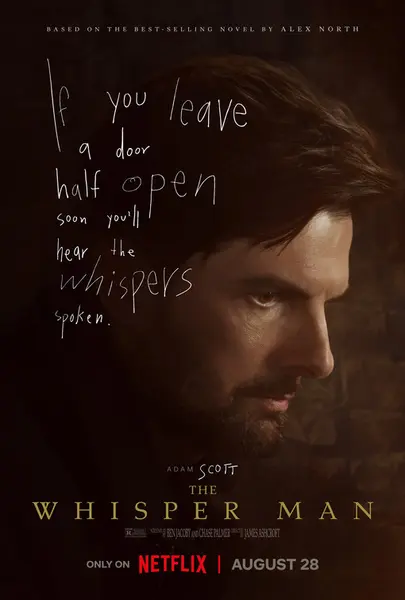

Reading
WELCOME TO MY VIRTUAL HOUSE
Francesco
Correale
Curious mind, drawn to sport, mathematics and technology — and to understanding how things work.
A place for the things I am interested in, discover and enjoy.
Currently: reading, listening, watching
Notes, ideas and other things
A little about me

I live and work in Milan, with Naples still a point of reference. Family, work and my passions share my time, often with a little difficulty fitting everything in.
I like mathematics and technology, but most of all I like understanding how things work. Sport gives that curiosity plenty of room: a game of tennis to play, a Napoli match to watch, a position on the chessboard to stop and think about.
Then there are trips, concerts, films and all those things you discover, sometimes by chance, and feel like recommending to someone.
That is part of why this site exists: a place to bring together a little of my world and share it. If you had come over to my house, we would probably have ended up talking about something you can find here.
Currently
Listening

While My Guitar Gently Weeps
Watch the performance ↗Watching
